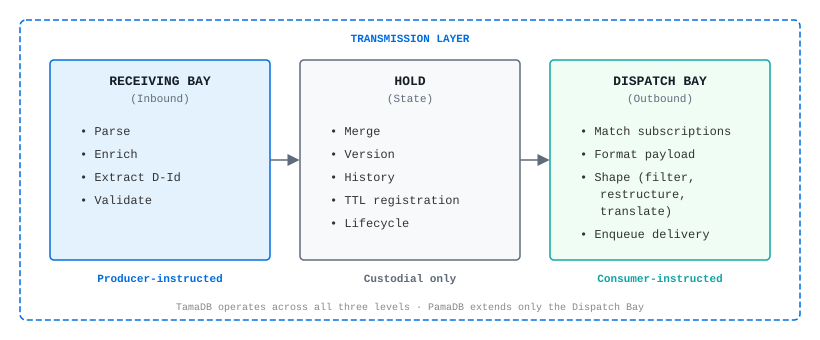
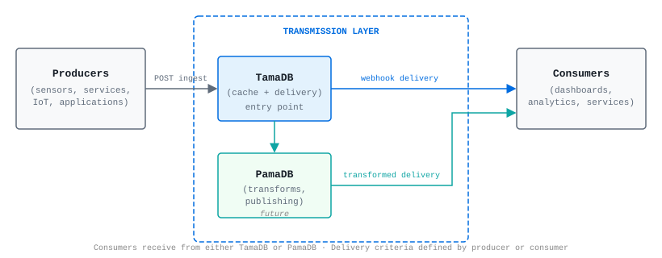
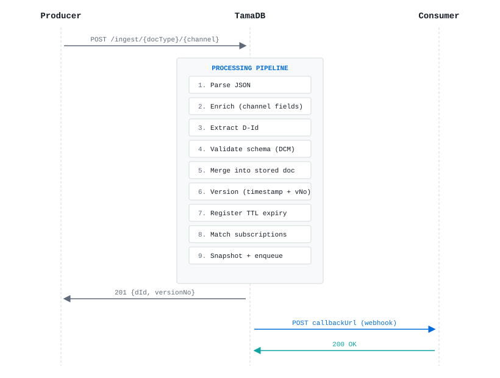

Transmission Layer Governance
This document defines the principles, guardrails, and boundaries that govern the capabilities of the transmission layer within the smart-endpoints/dumb-pipes data architecture. Any system operating in this layer — including TamaDB and PamaDB — must conform to these governance rules.
What the Transmission Layer Is
The transmission layer is a purpose-built intermediary responsible for the reliable, validated, and timely exchange of structured data between producers and consumers. It occupies the "pipe" in a smart-endpoints/dumb-pipes architecture.
Unconditional Responsibilities
| Responsibility | Description |
|---|---|
| Reception | Accept data from producers via defined ingestion channels |
| Identity Resolution | Determine the unique identity of each document from its content or context |
| State Management | Maintain the current merged state of each document with per-field versioning |
| Delivery | Push document state to registered consumers via configured channels |
| Observability | Provide structured logging, quarantine, and inspection capabilities |
Non-Responsibilities
The transmission layer does NOT:
- Apply business logic or decision rules
- Generate derived or computed values
- Transform data semantics (change meaning)
- Store data permanently (archive)
- Aggregate data across documents
- Authenticate end-users
- Orchestrate multi-step workflows
The Semantic Preservation Principle
The transmission layer shall preserve the semantic equivalence of every attribute it transports. For each individual attribute that enters and exits the layer, the meaning at exit must equal the meaning at entry.
No Signification Loss
Data that enters the transmission layer must be recoverable from what exits it. Prohibited: truncation, rounding, field dropping without explicit consumer consent, lossy encoding changes, or any operation where the original value cannot be reconstructed from the output.
No Signification Creation
The transmission layer does not generate new meaning. Business rule evaluation, derived fields, status inference, aggregation, and prediction belong outside the transmission layer.
Data Ownership Model
The architecture defines four roles along two axes:
| Role | Layer | Authority |
|---|---|---|
| Producer | Smart endpoint | Assigner/Owner — originates data, defines what is transmitted |
| Sender | Dumb pipe | Custodian — executes the producer's instructions |
| Receiver | Dumb pipe | Custodian — executes the consumer's instructions |
| Consumer | Smart endpoint | Assignee — consumes, interprets, and acts upon data |
The transmission layer is a custodian, not an owner: it holds data temporarily, does not claim rights over the content, does not alter its meaning, and discards it when TTL expires.
Directional Constraints
Inbound (Receiving Bay)
- Assembly permitted — enrichment may add producer-delegated fields
- Validation enforced — schema compliance is mandatory (DCM/HDOM)
- Document significance may grow
- Payload-supplied fields are preserved
Hold (State Management)
- No content alteration — the Hold never inspects, interprets, or modifies attribute values
- Operations are structural only (merge, version, expire)
- Strongest expression of the Semantic Preservation Principle
Outbound (Dispatch Bay)
- Reduction permitted — consumer-directed filtering may omit fields
- Translation permitted — consumer-directed representation adaptation
- Document significance may shrink, must never grow
- No attributes added that weren't in the stored document
Structural Model

Guardrails for Capability Evaluation
When evaluating whether a proposed capability belongs in the transmission layer:
| # | Question | If YES → |
|---|---|---|
| 1 | Does it create new meaning from existing data? | Does NOT belong |
| 2 | Does it apply business rules or domain logic? | Does NOT belong |
| 3 | Does it lose attribute-level signification without consumer consent? | Violates Semantic Preservation |
| 4 | Does it alter payload content without producer delegation? | Violates data ownership model |
| 5 | Does it require knowledge of what the data means? | Likely does NOT belong |
| 6 | Does it serve reliable, validated transmission of data? | Likely BELONGS |
Realizations
| System | Role | Status |
|---|---|---|
| TamaDB | Stateful document cache with validation, versioning, and push delivery (all three bays) | Active development |
| PamaDB | Publishing layer with representation adaptation (Dispatch Bay extension) | Planned |
About TamaDB
What Problem Does TamaDB Solve?
In modern data architectures, systems need to exchange structured data between producers (sensors, applications, services) and consumers (dashboards, analytics, downstream services) with minimal latency and maximum reliability.
TamaDB is a document-centric transmission cache for smart-endpoints/dumb-pipes architectures — a purpose-built, high-performance intermediary that:
- Receives JSON documents from multiple producers via dedicated channels
- Validates documents against registered JSON schemas
- Stores temporarily with configurable time-to-live (TTL)
- Pushes updates to registered consumers in real-time via webhooks
TamaDB is not a general-purpose database. It is intentionally limited in scope: no complex queries, no joins, no aggregations. Its strength is speed, simplicity, and reliable data delivery.
TamaDB vs Alternatives
| Alternative | What TamaDB Does Differently |
|---|---|
| Redis | Redis is a key-value store. TamaDB provides leaf-level versioning, merge semantics, schema validation, structured webhook delivery, and per-field history. |
| MongoDB | MongoDB is a general-purpose document DB. TamaDB is a purpose-built transmission cache with per-leaf versioning, merge-only upsert (fields are never lost), and push-first webhook delivery. Schema-strict, short-lived, not designed for long-term storage or complex queries. |
| Kafka | Kafka is a distributed log delivering raw events in order. TamaDB delivers the current merged state of a document to subscribers. They're complementary, not competing. |
| MQTT | MQTT delivers messages. TamaDB receives messages, validates against a schema, merges into a versioned document state, and delivers the merged result. TamaDB adds structure and state to raw message passing. |
Architectural Position
TamaDB and PamaDB together form the Transmission Layer — the intermediary between producers and consumers:

How the Transmission Layer works:
- Producers send data into the Transmission Layer via TamaDB (the entry point)
- TamaDB validates, versions, stores, and can deliver directly to consumers
- PamaDB extends TamaDB for delivery requirements outside TamaDB's scope (transformations, frozen documents, publishing)
- Consumers receive data from either TamaDB or PamaDB, depending on the delivery criteria
- Delivery criteria can be defined by either the producer or the consumer
Key principle: Dumb-pipe role. TamaDB never alters document content. It validates, stores, versions, and delivers — nothing more. PamaDB handles any transformation needs.
Core Concepts
Document
A JSON object stored in TamaDB. Documents are structured as trees of Bunches (objects) and Leaves (terminal values). Each leaf is independently versioned and has its own history.
Document_Type
The central organising concept. Every document belongs to exactly one Document_Type, which defines: the Master_Schema (what fields are valid and required), the document model (how strictly the schema is enforced), Channels (ingestion endpoints), TTL (document lifespan), and Subscriptions (notification targets).
Channels
An ingestion endpoint tied to a Document_Type. Producers push data to a channel URL. Each channel can have its own Channel_Schema (a subset of the Master_Schema), enrichment bindings (TamaDB injects fields the producer doesn't send), and status control (active, inactive, or blocked).
Upsert & Merge Semantics
TamaDB has a single ingestion operation — upsert. There is no separate "create" vs "update". If the document doesn't exist, it's created. If it exists, incoming fields are merged into the stored document. Fields present in the payload update (previous value goes to history). Fields absent from the payload are preserved unchanged. No data is ever removed by a store operation.
Subscriptions
Consumers register webhooks (callback URLs) and receive real-time updates. Subscriptions can be at the Document_Type level (fires for any document of that type) or D-Id level (fires for a specific document only). Payload is snapshotted at the moment of update — delivery is decoupled from the store.
Document TTL
Every document has a time-to-live. TamaDB is a cache, not an archive. TTL hierarchy: Document > Document_Type > Instance (most specific wins). Expired documents are soft-deleted. TTL=0 means "process and deliver, but don't cache" (transient).
Schema Validation
TamaDB validates documents on ingestion using JSON Schema (Draft 7). Required fields must be present, field types must match, and unknown fields are rejected under the Document Closed Model (DCM). Validation happens on the Enriched_Document (payload + channel-supplied fields).
Document Models
TamaDB's document models map to the industry-standard distinction between defensive and offensive data strategies. Defensive strategies prioritise data integrity, compliance, and quality control. Offensive strategies prioritise flexibility, experimentation, and speed of onboarding new data sources.
| Model | Increment | Schema Required | Unknown Fields | Data Strategy | Use Case |
|---|---|---|---|---|---|
| DCM (Document Closed Model) | 1 | Yes | Rejected | Defensive | Strict data contracts, compliance, data quality |
| HDOM (Hybrid Document Open Model) | 2 | Yes | Allowed as extensions | Balanced | Evolving schemas — defend core, enable exploration |
| DOM (Document Open Model) | 3 | Optional | Allowed | Offensive | Flexible onboarding, experimentation, agility |
Regardless of model, the Semantic Preservation Principle applies: TamaDB never alters or creates meaning. The flexibility is in what it accepts, not in what it does to the data.
End-to-End Data Flow

Increment 1 — What's Delivered
Capabilities
| Area | What's Included |
|---|---|
| Ingestion | REST endpoint per Document_Type and per channel, upsert-merge semantics |
| Validation | DCM schema enforcement, required fields, type checking, conditional rules |
| Identity | D-Id extraction from document fields (identityKind annotations), single and composed keys |
| Versioning | Per-leaf history with configurable depth, optimistic concurrency control |
| Channels | Registration, status management (active/inactive/blocked), schema assignment |
| Enrichment | Static field injection per channel, conflict detection + policy resolution |
| Delivery | Webhook subscriptions (Document_Type-level and D-Id-level), envelope/raw format |
| TTL | Three-scope hierarchy, background sweep, on-access check, TTL=0 transient processing |
| Quarantine | Rejected payload storage with policy control, read-only inspection API |
| Storage | Memory, disk, hybrid, and auto strategies with runtime switching and drain |
| Persistence | Write-through state persistence — schemas, Document_Types, channels, subscriptions, enrichment, TTL, quarantine, and config survive restarts |
| Observability | Structured JSON logging, runtime-configurable levels and destination |
| Admin | Platform-independent graceful shutdown endpoint, health check |
| API | Full REST/HTTP API (~46 endpoints) for all operations and configuration |
Technology Stack
| Layer | Technology |
|---|---|
| Runtime | Node.js 22 (ESM) |
| Language | TypeScript 6 (strict mode) |
| HTTP Framework | Fastify 5 |
| Schema Validation | Ajv 8 (JSON Schema Draft 7) |
| Logging | Pino 10 (structured JSON) |
| Testing | Vitest 4 + fast-check 4 (property-based) |
Why TypeScript for Increment 1?
TypeScript was chosen deliberately for this phase — not as the final deployment language, but as the fastest path to proving the architecture works.
- Rapid concept validation. The goal of Increment 1 is to prove the pipeline model, merge semantics, schema validation, and API contract are correct. TypeScript's expressiveness and fast iteration cycle (no compile-link-run delays) made this possible rapidly.
- Language-agnostic design. The architecture is defined at the interface/contract level. Component interfaces, data flow, and the 9-step processing pipeline are not coupled to TypeScript — they translate directly to traits (Rust), interfaces (Java/Go), or protocols (Swift).
- Living reference implementation. The TypeScript codebase serves as a verifiable proof that the design is complete. With 467+ tests (including property-based tests), it validates correctness properties that any future implementation must also satisfy.
- Planned Rust rewrite for production. For quasi-production deployment (running 24/7 parallel to production systems), a Rust rewrite is planned. Rust eliminates Garbage Collection pauses, guarantees predictable latency, prevents memory leaks via ownership, and produces a single static binary with no runtime dependencies.
In short: TypeScript proves the what and how. Rust will deliver the at-scale and in-production.
Roadmap
Increment 2
- HDOM (Hybrid Document Open Model) — schema validation for known fields, extensions allowed
- Discrete leaf updates — update individual fields by path without sending full document
- Foreign D-Ids (full) — dynamic/rule-based identity derivation
- Library Sections — category-based document grouping
- Subscription updates — in-place modification of active subscriptions
- Schema adoption — propagate mode auto-adopts latest Retrieval_Schema version
Increment 3
- DOM (Document Open Model) — no schema enforcement, fully dynamic
- Alien D-Ids — documents with no identity (immutable, non-updatable one-shots)
- Element-level arrays — address individual array elements (sparse transmission)
Future Vision
- PamaDB — data publishing layer (transformations, frozen documents, hard subscriptions)
- Sanitation — validate stored documents against template schemas
- Multi-protocol — gRPC, WebSocket ingestion alongside REST
- Idempotent updates — detect and skip duplicate payloads
- Storage segmentation — per-Document_Type data isolation
TamaDB User Manual
Getting Started
Prerequisites
- Node.js 22 or later
- npm (comes with Node.js)
Installation & Startup
# Clone the repository
git clone https://github.com/teneriscc/TamaDB.git
cd TamaDB
# Install dependencies
npm ci
# Build
npm run build
# Start the server
npm start
# Or for development (auto-reload):
npm run devRun with Docker
A prebuilt, multi-architecture image (linux/amd64 and linux/arm64) is published on Docker Hub, so you can run TamaDB without installing Node.js:
docker run --rm -p 3000:3000 teneriscc/tamadb:latestFor persistent volumes, Docker Compose, and the full environment-variable reference, see the Docker Hub overview.
TamaDB starts on port 3000 by default. Verify with:
curl http://localhost:3000/healthResponse:
{
"status": "ok",
"version": "0.5.0",
"commit": "0b8032935370",
"storageMode": "auto",
"logLevel": "debug"
}Configuration (Environment Variables)
| Variable | Default | Description |
|---|---|---|
TAMADB_PORT | 3000 | HTTP port |
TAMADB_HOST | 0.0.0.0 | Bind address |
TAMADB_LOG_LEVEL | debug | Log level (debug/info/warn/error/silent) |
TAMADB_STORAGE_MODE | auto | Storage strategy (auto/memory/disk/hybrid) |
Step 1: Register a Schema
Before storing documents, define the structure they must follow.
curl -X POST http://localhost:3000/api/v1/schemas \
-H "Content-Type: application/json" \
-d '{
"ref": "temperature-sensor-v1",
"schema": {
"$schema": "http://json-schema.org/draft-07/schema#",
"type": "object",
"properties": {
"sensorId": { "type": "string", "identityKind": "primary-key" },
"location": { "type": "string" },
"temperature": { "type": "number" },
"timestamp": { "type": "string" }
},
"required": ["sensorId", "location", "temperature"]
}
}'Response:
{ "ref": "temperature-sensor-v1", "version": 1 }Key points:
identityKind: "primary-key"tells TamaDB which field(s) form the document's identityrequiredfields must be present in every ingested document (or supplied by enrichment)
Retrieve a schema
curl http://localhost:3000/api/v1/schemas/temperature-sensor-v1Update a schema
curl -X PUT http://localhost:3000/api/v1/schemas/temperature-sensor-v1 \
-H "Content-Type: application/json" \
-d '{
"schema": {
"$schema": "http://json-schema.org/draft-07/schema#",
"type": "object",
"properties": {
"sensorId": { "type": "string", "identityKind": "primary-key" },
"location": { "type": "string" },
"temperature": { "type": "number" },
"humidity": { "type": "number" },
"timestamp": { "type": "string" }
},
"required": ["sensorId", "location", "temperature"]
}
}'View schema version history
curl http://localhost:3000/api/v1/schemas/temperature-sensor-v1/versionsDecommission a schema
curl -X POST http://localhost:3000/api/v1/schemas/temperature-sensor-v1/decommissionReactivate a schema
curl -X POST http://localhost:3000/api/v1/schemas/temperature-sensor-v1/reactivateStep 2: Register a Document_Type
Group documents under a named type with its Master_Schema.
curl -X POST http://localhost:3000/api/v1/config/document-types \
-H "Content-Type: application/json" \
-d '{
"name": "temperature-readings",
"masterSchema": "temperature-sensor-v1",
"model": "closed",
"ttl": 3600
}'Response:
{
"name": "temperature-readings",
"masterSchema": "temperature-sensor-v1",
"model": "closed",
"ttl": 3600,
"channels": [],
"createdAt": "2026-07-17T10:00:00.000Z",
"updatedAt": "2026-07-17T10:00:00.000Z"
}Parameters:
model: "closed"— strict validation, no unknown fields allowedttl: 3600— documents expire after 1 hour
Get a Document_Type configuration
curl http://localhost:3000/api/v1/config/document-types/temperature-readingsSet per-Document_Type TTL
curl -X PUT http://localhost:3000/api/v1/config/document-types/temperature-readings/ttl \
-H "Content-Type: application/json" \
-d '{ "ttl": 7200 }'Delete a Document_Type
Requires no documents of that type exist (including soft-deleted):
curl -X DELETE http://localhost:3000/api/v1/config/document-types/temperature-readingsStep 3: Register a Channel (Optional)
Channels give producers their own ingestion endpoint, optionally with enrichment.
curl -X POST http://localhost:3000/api/v1/config/channels \
-H "Content-Type: application/json" \
-d '{
"channelId": "garage-sensor",
"documentType": "temperature-readings"
}'Add Enrichment Bindings
Enrichment injects fields the producer doesn't need to send:
curl -X PUT http://localhost:3000/api/v1/config/channels/garage-sensor/enrichment \
-H "Content-Type: application/json" \
-d '{
"bindings": [
{ "fieldPath": "location", "staticValue": "Garage" },
{ "fieldPath": "sensorId", "staticValue": "GARAGE-TEMP-01" }
]
}'Now the producer only needs to send {"temperature": 22.5} — TamaDB fills in the rest.
Get enrichment bindings
curl http://localhost:3000/api/v1/config/channels/garage-sensor/enrichmentRemove enrichment bindings
curl -X DELETE http://localhost:3000/api/v1/config/channels/garage-sensor/enrichmentUpdate a channel
curl -X PUT http://localhost:3000/api/v1/config/channels/garage-sensor \
-H "Content-Type: application/json" \
-d '{ "channelSchema": "temperature-sensor-v1" }'Deactivate a channel
curl -X POST http://localhost:3000/api/v1/config/channels/garage-sensor/deactivateDelete a channel
curl -X DELETE http://localhost:3000/api/v1/config/channels/garage-sensorStep 4: Ingest Documents
Direct ingestion (Document_Type-level)
The request body is the bare JSON document — no wrapper. Per-request instructions (version, TTL, expiry, schema) travel as reserved TamaDB-* headers, not body fields (see below).
curl -X POST http://localhost:3000/api/v1/ingest/temperature-readings \
-H "Content-Type: application/json" \
-d '{
"sensorId": "LIVING-ROOM-01",
"location": "Living Room",
"temperature": 21.5,
"timestamp": "2026-07-17T10:05:00Z"
}'Response (201 Created):
{
"dId": "LIVING-ROOM-01",
"versionNo": 1,
"created": true
}Channel ingestion (with enrichment)
curl -X POST http://localhost:3000/api/v1/ingest/temperature-readings/garage-sensor \
-H "Content-Type: application/json" \
-d '{
"temperature": 18.2,
"timestamp": "2026-07-17T10:06:00Z"
}'Response (201 Created):
{
"dId": "GARAGE-TEMP-01",
"versionNo": 1,
"created": true
}TamaDB enriched the document with sensorId and location from the channel bindings before storing.
Update an existing document (upsert)
Send the same sensorId again — TamaDB merges the new temperature into the existing document:
curl -X POST http://localhost:3000/api/v1/ingest/temperature-readings/garage-sensor \
-H "Content-Type: application/json" \
-d '{
"temperature": 19.1,
"timestamp": "2026-07-17T10:10:00Z"
}'Response (200 OK — updated, not created):
{
"dId": "GARAGE-TEMP-01",
"versionNo": 2,
"created": false
}Per-request instructions: TamaDB-* Control_Headers
Per-request instructions are optional HTTP headers in the reserved TamaDB-* namespace; the body stays a pure document.
| Header | Value | Purpose |
|---|---|---|
TamaDB-Version | positive integer (≥ 1) | Optimistic concurrency — write only if the stored version matches (see Step 8). Omit for a blind write. |
TamaDB-TTL | integer seconds (≥ 0), or infinite | Document-level TTL. 0 = process-and-forward without caching. |
TamaDB-Expire-At | ISO-8601 timestamp (explicit timezone) | Expire-at-Point-in-Time — a hard delivery deadline regardless of TTL. |
TamaDB-Schema | schema ref | Explicit Storage_Schema override (takes precedence over the URL-derived schema). |
Example — the same ingest with a one-hour TTL and an explicit schema:
curl -X POST http://localhost:3000/api/v1/ingest/temperature-readings/garage-sensor \
-H "Content-Type: application/json" \
-H "TamaDB-TTL: 3600" \
-H "TamaDB-Schema: temperature-sensor-v1" \
-d '{
"temperature": 19.1,
"timestamp": "2026-07-17T10:10:00Z"
}'If a Control_Header is present but invalid (a non-integer TTL, a TamaDB-Version below 1, a timezone-less timestamp), TamaDB rejects the whole request rather than guessing:
{
"code": "INVALID_CONTROL_HEADER",
"message": "Invalid value for header TamaDB-Version: expected a positive integer (>= 1)"
}Step 5: Retrieve Documents
List all Document_Types
curl http://localhost:3000/api/v1/config/document-typesList all documents in a Document_Type
# Use glob wildcard * to match all D-Ids
curl http://localhost:3000/api/v1/documents/temperature-readings/*Response:
{
"matches": [
{ "sensorId": "LIVING-ROOM-01", "location": "Living Room", "temperature": 21.5, ... },
{ "sensorId": "GARAGE-TEMP-01", "location": "Garage", "temperature": 19.1, ... }
],
"count": 2
}Full document by D-Id
curl http://localhost:3000/api/v1/documents/temperature-readings/GARAGE-TEMP-01Response:
{
"sensorId": "GARAGE-TEMP-01",
"location": "Garage",
"temperature": 19.1,
"timestamp": "2026-07-17T10:10:00Z"
}Retrieve a specific field
curl "http://localhost:3000/api/v1/documents/temperature-readings/GARAGE-TEMP-01?path=temperature"Response:
{ "_value": 19.1 }Search by value
curl -X POST http://localhost:3000/api/v1/documents/temperature-readings/search \
-H "Content-Type: application/json" \
-d '{ "field": "location", "value": "Garage" }'Response:
{
"matches": [
{ "sensorId": "GARAGE-TEMP-01", "location": "Garage", "temperature": 19.1, "timestamp": "2026-07-17T10:10:00Z" }
],
"count": 1
}Glob pattern matching
# All sensors starting with "GARAGE"
curl http://localhost:3000/api/v1/documents/temperature-readings/GARAGE-*Step 6: Subscribe to Updates
Register a webhook to receive updates in real-time:
curl -X POST http://localhost:3000/api/v1/subscriptions \
-H "Content-Type: application/json" \
-d '{
"scope": "document_type",
"documentType": "temperature-readings",
"callbackUrl": "https://my-dashboard.example.com/webhook/temperatures",
"options": {
"deliveryMode": "retry",
"payloadFormat": "envelope"
}
}'Response (201):
{
"id": "sub-abc123-0001",
"scope": "document_type",
"documentType": "temperature-readings",
"callbackUrl": "https://my-dashboard.example.com/webhook/temperatures",
"options": { "deliveryMode": "retry", "payloadFormat": "envelope" },
"active": true,
"createdAt": "2026-07-17T10:15:00Z"
}Every time a temperature reading is stored or updated, TamaDB POSTs to your callback:
{
"subscriptionId": "sub-abc123-0001",
"dId": "GARAGE-TEMP-01",
"documentType": "temperature-readings",
"document": {
"sensorId": "GARAGE-TEMP-01",
"location": "Garage",
"temperature": 19.1
},
"timestamp": "2026-07-17T10:10:00Z"
}Subscribe to a specific document
curl -X POST http://localhost:3000/api/v1/subscriptions \
-H "Content-Type: application/json" \
-d '{
"scope": "document_id",
"documentType": "temperature-readings",
"dId": "LIVING-ROOM-01",
"callbackUrl": "https://alerts.example.com/living-room"
}'List subscriptions
# All subscriptions for a Document_Type
curl http://localhost:3000/api/v1/document-types/temperature-readings/subscriptions
# Subscriptions for a specific document
curl http://localhost:3000/api/v1/documents/temperature-readings/GARAGE-TEMP-01/subscriptionsCancel a subscription
curl -X DELETE http://localhost:3000/api/v1/subscriptions/sub-abc123-0001Step 7: Delete a Document
Soft-delete permanently excludes the document from retrieval and delivery:
curl -X DELETE http://localhost:3000/api/v1/documents/temperature-readings/LIVING-ROOM-01Response:
{ "deleted": true }The document's data and history are preserved in storage for audit, but it will never be served again.
Step 8: Optimistic Concurrency
Prevent accidental overwrites by supplying the expected version as the TamaDB-Version header (the body stays a bare document):
curl -X POST http://localhost:3000/api/v1/ingest/temperature-readings \
-H "Content-Type: application/json" \
-H "TamaDB-Version: 2" \
-d '{ "sensorId": "LIVING-ROOM-01", "location": "Living Room", "temperature": 23 }'If the document's current version is not 2, TamaDB rejects with:
{
"code": "VERSION_CONFLICT",
"message": "Version conflict: expected 2, current is 3"
}Omit the TamaDB-Version header for a "blind write" (last-write-wins).
Configuration at Runtime
All configuration is changeable without restart via the API.
| Category | Valid Values | Default |
|---|---|---|
| Log Level | debug, info, warn, error, silent | debug |
| Log Destination | stdout, file, none | stdout |
| Storage Strategy | auto, memory, disk, hybrid | auto |
| TTL (Instance-level) | Integer (seconds), 0 = transient, or "infinite" | 3600 |
| Quarantine Policy | off, data-errors-only, all-rejections | data-errors-only |
| Enrichment Precedence | environment-over-content, content-over-environment | environment-over-content |
| Enrichment Conflict Resolution | accept-and-warn, discard-and-error | accept-and-warn |
Log Level
# Check current
curl http://localhost:3000/api/v1/config/log-level
# Change to warn
curl -X PUT http://localhost:3000/api/v1/config/log-level \
-H "Content-Type: application/json" \
-d '{ "level": "warn" }'Log Destination
# Check current
curl http://localhost:3000/api/v1/config/log-destination
# Switch to file
curl -X PUT http://localhost:3000/api/v1/config/log-destination \
-H "Content-Type: application/json" \
-d '{ "destination": "file", "filePath": "./tamadb.log" }'
# Switch back to stdout
curl -X PUT http://localhost:3000/api/v1/config/log-destination \
-H "Content-Type: application/json" \
-d '{ "destination": "stdout" }'
# Disable logging
curl -X PUT http://localhost:3000/api/v1/config/log-destination \
-H "Content-Type: application/json" \
-d '{ "destination": "none" }'Document TTL (Instance-level)
# Check current
curl http://localhost:3000/api/v1/config/ttl/instance
# Change to 2 hours (7200 seconds)
curl -X PUT http://localhost:3000/api/v1/config/ttl/instance \
-H "Content-Type: application/json" \
-d '{ "ttl": 7200 }'Document TTL (Per-document)
# Set TTL for a specific document (overrides Document_Type and instance TTL)
curl -X PUT http://localhost:3000/api/v1/documents/temperature-readings/GARAGE-TEMP-01/ttl \
-H "Content-Type: application/json" \
-d '{ "ttl": 1800 }'TTL Sweep Interval
Controls how frequently TamaDB checks for expired documents (in milliseconds):
# Change sweep interval to 30 seconds
curl -X PUT http://localhost:3000/api/v1/config/ttl/sweep-interval \
-H "Content-Type: application/json" \
-d '{ "interval": 30000 }'Storage Strategy
# Check current
curl http://localhost:3000/api/v1/config/storage-strategy
# Change to memory
curl -X PUT http://localhost:3000/api/v1/config/storage-strategy \
-H "Content-Type: application/json" \
-d '{ "mode": "memory" }'Drain Memory to Disk
Flushes all in-memory documents to disk storage. Useful before stopping TamaDB or when switching away from auto/hybrid/memory mode. No-op in disk mode. TamaDB also automatically drains on graceful shutdown (Ctrl+C / SIGTERM).
curl -X POST http://localhost:3000/api/v1/config/storage/drainResponse:
{ "drained": true, "documentsWritten": 42, "mode": "auto" }Quarantine Policy
# Check current
curl http://localhost:3000/api/v1/config/quarantine-policy
# Change to all-rejections
curl -X PUT http://localhost:3000/api/v1/config/quarantine-policy \
-H "Content-Type: application/json" \
-d '{ "policy": "all-rejections" }'Enrichment Policies
# Check current
curl http://localhost:3000/api/v1/config/enrichment-policies
# Change policies
curl -X PUT http://localhost:3000/api/v1/config/enrichment-policies \
-H "Content-Type: application/json" \
-d '{
"precedence": "environment-over-content",
"conflictResolution": "accept-and-warn"
}'Persistence & Durability
TamaDB persists all state to the .tamadb-data/ directory so it resumes exactly where it left off after a restart.
What Survives a Restart
| State | Persisted? | How |
|---|---|---|
| Schemas (+ version history) | Yes | Write-through on every mutation |
| Document_Types | Yes | Write-through on every mutation |
| Channels (+ status) | Yes | Write-through on every mutation |
| Subscriptions | Yes | Write-through on every mutation |
| Enrichment bindings & policies | Yes | Write-through on every mutation |
| TTL settings | Yes | Write-through on every mutation |
| Quarantine entries | Yes | Write-through on every mutation |
| Runtime config | Yes | Write-through on every mutation |
| Documents | Depends on storage strategy | See below |
Document Durability by Storage Strategy
| Strategy | Document Persistence | Trade-off |
|---|---|---|
disk | Written to disk immediately on ingest | Safest. Slower writes. |
hybrid | Written to both memory and disk | Fast reads + durable |
auto (default) | Per-operation: uses disk when memory constrained | Balanced |
memory | No disk writes. All state lost on restart. | Fastest. Ephemeral (testing/CI) |
To start fresh: delete the .tamadb-data/ directory and restart.
Graceful Shutdown
TamaDB provides a platform-independent shutdown endpoint:
curl -X POST http://localhost:3000/api/v1/admin/shutdownResponse:
{ "status": "shutting-down" }This drains all in-memory documents to disk, persists all configuration state, closes the HTTP server, and exits cleanly. Also triggered by Ctrl+C / SIGTERM on Linux/macOS.
Troubleshooting
Reading Logs
TamaDB outputs structured JSON logs to stdout. Each log entry includes:
level: debug, info, warn, errortime: ISO timestampmsg: human-readable description- Contextual fields: dId, documentType, channelId, error details
Example log entries:
{"level":"info","time":"2026-07-17T10:05:00Z","msg":"Document stored","documentType":"temperature-readings","dId":"LIVING-ROOM-01","versionNo":1}
{"level":"warn","time":"2026-07-17T10:06:00Z","msg":"Enrichment conflict resolved","fieldPath":"location","winner":"environment"}
{"level":"error","time":"2026-07-17T10:07:00Z","msg":"Schema validation failed","documentType":"temperature-readings","errors":"Field 'temperature' expected type number"}Inspecting Quarantined Payloads
When a payload is rejected and the quarantine policy permits it, TamaDB stores the original payload for inspection.
Check the error response for the quarantine reference:
{
"code": "SCHEMA_VALIDATION_FAILED",
"message": "Field 'temperature' expected type number, got string",
"quarantineRef": "qr-m1abc-0001"
}Retrieve the quarantined payload:
curl http://localhost:3000/api/v1/quarantine/qr-m1abc-0001List all quarantined entries:
# All entries
curl http://localhost:3000/api/v1/quarantine
# Filter by type
curl "http://localhost:3000/api/v1/quarantine?rejectionType=parse-error"
# Paginate
curl "http://localhost:3000/api/v1/quarantine?limit=10&offset=0"Common Error Codes
| Code | HTTP | Meaning | What to do |
|---|---|---|---|
PARSE_ERROR | 400 | Payload is not valid JSON | Fix the producer's serialization |
SCHEMA_VALIDATION_FAILED | 422 | Document doesn't match schema | Check required fields, types, extra fields |
DOCUMENT_TYPE_NOT_FOUND | 404 | No such Document_Type registered | Register it first via /config/document-types |
CHANNEL_NOT_FOUND | 404 | Channel doesn't exist | Register it via /config/channels |
CHANNEL_INACTIVE | 403 | Channel suspended by operator | Activate it: POST /config/channels/{id}/activate |
CHANNEL_BLOCKED | 403 | Channel blocked due to schema conflict | Fix the Channel_Schema to be compatible with Master |
VERSION_CONFLICT | 409 | Optimistic concurrency mismatch | Re-read the document's current version and retry |
ENRICHMENT_CONFLICT | 409 | Payload conflicts with enrichment bindings | Check enrichment policy or adjust bindings |
DOCUMENT_NOT_FOUND | 404 | Document doesn't exist or is soft-deleted | Check the reason field for details |
Channel Status Issues
If a channel stops accepting ingestion:
# Check channel status
curl http://localhost:3000/api/v1/config/channels?documentType=temperature-readingsLook at the status field:
"active"— accepting ingestion (normal)"inactive"— operator-suspended. Reactivate:POST /config/channels/{id}/activate"blocked"— schema conflict. Fix the Channel_Schema, then activation becomes possible
Composed D-Ids (Multi-Field Identity)
When a schema has multiple identity fields (e.g., customer + order), D-Ids are composed:
{
"properties": {
"customerId": { "type": "string", "identityKind": "parent-key" },
"orderId": { "type": "string", "identityKind": "primary-key" }
}
}In URLs, composed D-Ids use : as delimiter:
curl http://localhost:3000/api/v1/documents/orders/customer-A:order-123In request bodies (store response), they're arrays:
{ "dId": ["customer-A", "order-123"] }Quick Reference: Key Endpoints
| Operation | Method | URL |
|---|---|---|
| Ingest (document_type) | POST | /api/v1/ingest/{documentType} |
| Ingest (channel) | POST | /api/v1/ingest/{documentType}/{channelId} |
| Retrieve document | GET | /api/v1/documents/{documentType}/{dId} |
| Delete document | DELETE | /api/v1/documents/{documentType}/{dId} |
| Search | POST | /api/v1/documents/{documentType}/search |
| Subscribe | POST | /api/v1/subscriptions |
| Cancel subscription | DELETE | /api/v1/subscriptions/{subscriptionId} |
| Register schema | POST | /api/v1/schemas |
| Register Document_Type | POST | /api/v1/config/document-types |
| Register channel | POST | /api/v1/config/channels |
| Set enrichment | PUT | /api/v1/config/channels/{channelId}/enrichment |
| Inspect quarantine | GET | /api/v1/quarantine/{ref} |
| Change log level | PUT | /api/v1/config/log-level |
| Health check | GET | /health |
| Graceful shutdown | POST | /api/v1/admin/shutdown |
Document version: 1.1 — August 2026. Corresponds to: TamaDB Increment 1
About Me
I'm passionate about building reliable, high-performance distributed systems. My focus areas include event-driven architectures and data pipelines.
Background
With experience in designing and implementing transmission-layer systems, I specialise in building purpose-built middleware that sits between data producers and consumers — ensuring data quality, reliability, and real-time delivery.
Current Projects
- TamaDB — A document-centric transmission cache for validated, versioned document delivery
- PamaDB — A planned data publishing layer for transformations and frozen document snapshots
PamaDB
PamaDB is the planned data publishing layer in the TamaDB ecosystem. While TamaDB handles transmission (receive, validate, cache, deliver), PamaDB will handle transformation and publication.
Planned Capabilities
- Data Transformations — Apply rules to transform documents before publishing to downstream systems
- Frozen Documents — Create immutable snapshots of document state for audit and compliance
- Hard Subscriptions — Guaranteed delivery contracts with persistence and retry semantics beyond TamaDB's soft webhooks
- Retrieval Schemas — Shape document output per consumer needs without affecting the stored canonical form
Relationship to TamaDB
PamaDB consumes from TamaDB's delivery pipeline. TamaDB remains the dumb-pipe transmission layer; PamaDB adds intelligence for publishing. They are complementary, not competing.
Contact
Feel free to reach out for questions, collaboration, or feedback on TamaDB and related projects.
Get in Touch
- Email: Available on request
- GitHub: github.com/teneriscc
External Links
Code & Repositories
- TamaDB on GitHub — Source code, issues, releases
- TamaDB on Docker Hub — Prebuilt multi-arch image:
docker pull teneriscc/tamadb - GitHub Profile — Open-source contributions and experiments
Technical Blog
- Technical Blog — Articles on system design, middleware, and data architecture